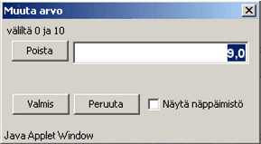

BACnet-laitteiden analogiset arvot esitetään 963:ssa asetusarvoina; niitä voidaan säätää kaaviosivulta tai Laitenäytöstä.
Asetusarvon (analogisen arvon) säätäminen BACnet-laitteessa:
Siirry sivulle, joka sisältää säädettävän asetusarvon ja napsauta sitten painiketta tai kuvaa, joka mahdollistaa asetusarvon muuttamisen.
Tai
Siirry säädettävään asetusarvoon Laitenäytössä, napsauta säädettävää asetusarvoa hiiren oikealla painikkeella ja napsauta Muuta pisteen arvoa.
BACnet-laite -keskusteluruutu tulee näkyviin.
Napsauta Muuta arvoa. Muuta arvo -keskusteluruutu tulee näkyviin.

Syötä uusi arvo kenttään Uusi arvo.
Huomaa, että valitsemalla Näytä näppäimistö -valintaruudun saat näytölle ohjelmallisen näppäimistön, jonka avulla voit syöttää uuden arvon.
Napsauta Valmis. Joissakin tapauksissa saat ilmoituksen, jossa pyydetään vahvistamaan muutos. Napsauta Kyllä.
Jos olet yhteydessä 963 Serveriin tekstitilassa, säätöjä voidaan tehdä ainoastaan kaaviosivulta ja ne tehdään eri tavalla.
Asetusarvon (analogisen arvon) muuttaminen BACnet-laitteessa tekstitilassa:
Siirry sivulle, joka sisältää säädettävän arvon.
Syötä uusi arvo arvon viereiseen ruutuun.
Napsauta lähettääksesi tiedon säätimeen.